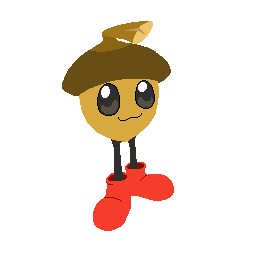

Wow funny blog
So real quick, lemme say that Psychcool was the one to inspire me to add a blog to this site so uh yeah thank youuuuuuuuuuu
Ok so anyways, these blogs are basically gonna be me autistically rambling about stuff I like and stuff related to my game. I'll have a little header above each section on what it's about. Dm me on discord if you have any critscism!
The next Timbre update, 3rd Mix, is coming along nicely! Here's a teaser image of acorn guy doin a dance!
